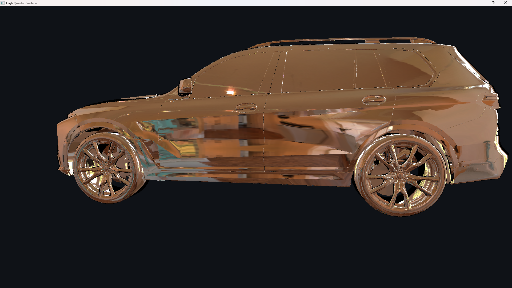
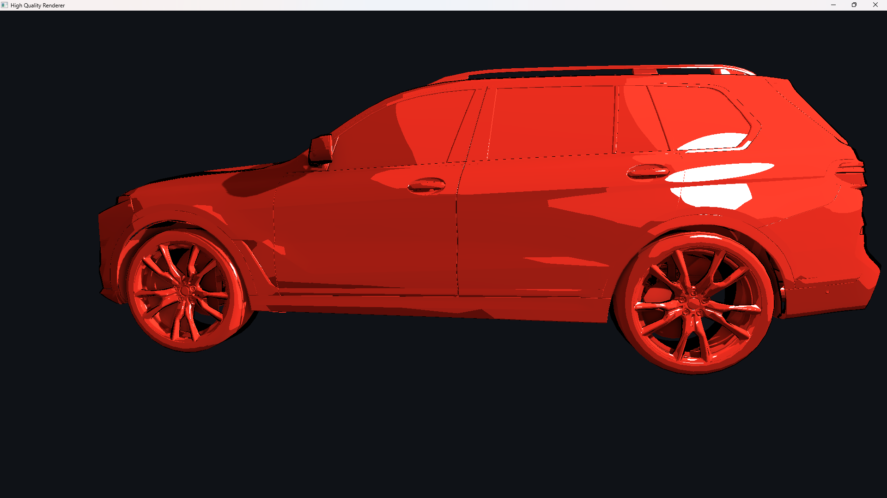
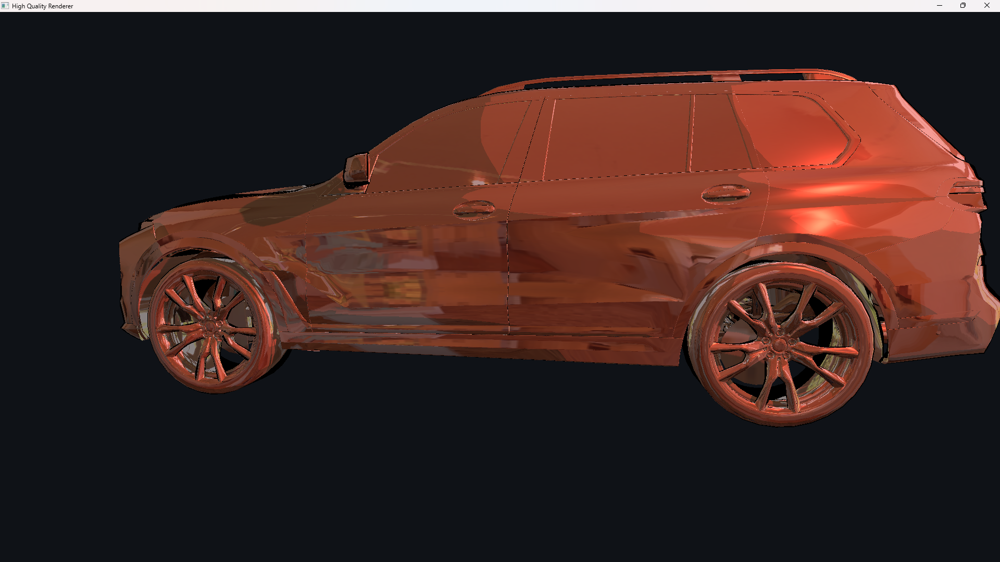
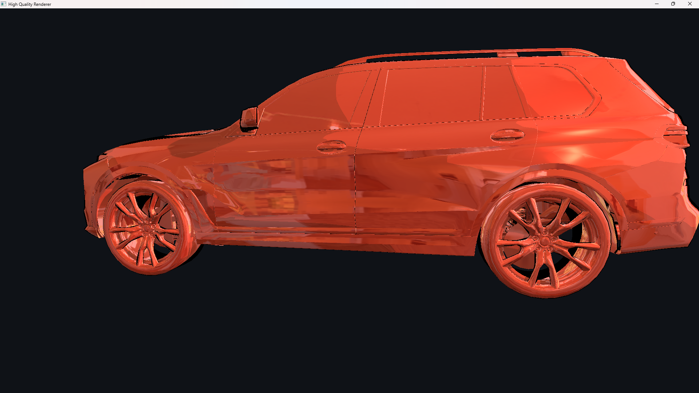
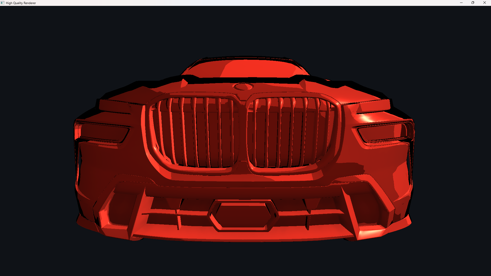
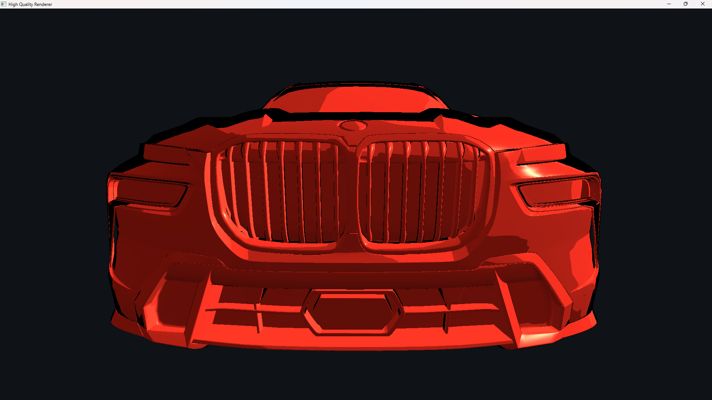
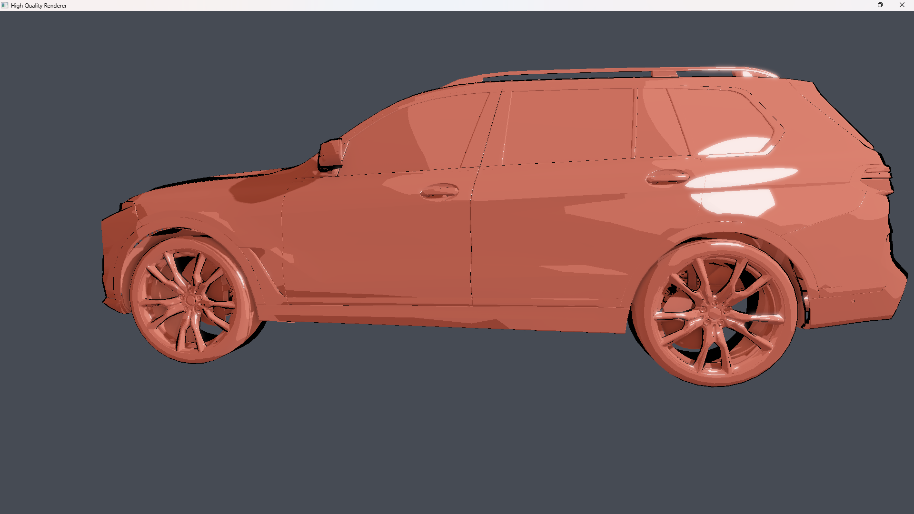
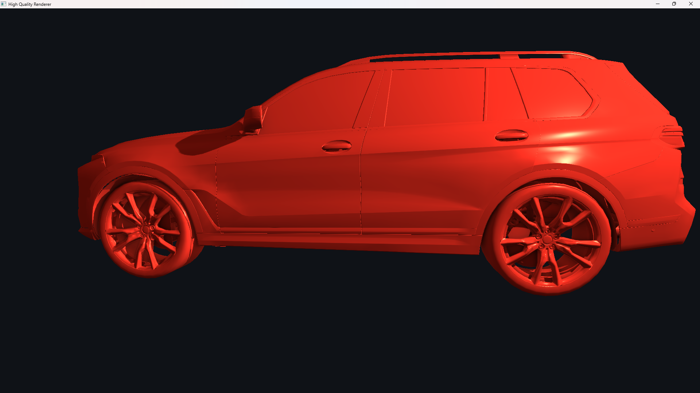

Toon/cel shading: quantized diffuse bands, binary specular highlight, rim lighting, and N·V silhouette outline on a vehicle mesh.
Toon/cel shading: quantized diffuse bands, binary specular highlight, rim lighting, and N·V silhouette outline on a vehicle mesh.
The fixed-function OpenGL pipeline is replaced entirely with programmable GLSL vertex and fragment shaders. The vertex shader transforms each vertex into world space, computes the correct world-space normal via the transpose-inverse normal matrix, and emits the light-space position needed for shadow mapping, all passed to the fragment stage through an interface block. No fixed-function lighting or texturing is used anywhere in the pipeline.
As the non-standard shading effect, a toon/cel shading model is implemented in the fragment shader. Rather than evaluating a continuous reflectance model, the diffuse term quantizes the Lambertian N·L value into four discrete brightness bands (full lit, mid-light, mid-shadow, deep shadow), producing the flat regions of color characteristic of cel animation. The specular highlight applies a hard binary threshold on the half-vector term instead of a smooth GGX or Phong lobe, giving a crisp, cartoon-style highlight. A specular size parameter maps to a shininess exponent in the range [4, 128], where larger values produce a tighter highlight. A rim-light term is computed from one minus N·V, raised to a power and thresholded tints the silhouette edges with the surface albedo color, scaled by a controllable rim intensity, reinforcing the stylized look. Fragments whose N·V falls below a threshold are shaded solid black, tracing a silhouette outline in screen space without any additional geometry pass.
Toon/cel shading: quantized diffuse bands, binary specular highlight, rim lighting, and N·V silhouette outline on a vehicle mesh.
Shadow mapping is implemented as a two-pass algorithm. In the first pass, the scene is
rendered from the point light's perspective using a perspective frustum, and only depth
values are written to a GL_DEPTH_COMPONENT texture attached to a dedicated
framebuffer object. Front-face culling is enabled during this pass to reduce self-shadowing
artifacts on back faces.
In the main shading pass, each fragment's world-space position is transformed into the light's clip space using the same light-space matrix. After the perspective divide, the resulting depth is compared against the value stored in the shadow map. A normal-dependent depth bias is clamped to a minimum of 25% of the base bias value and scaled upward by one minus N·L for surfaces at shallow angles to the light, which is subtracted before the comparison to prevent shadow acne. Fragments outside the light's frustum are treated as fully lit.
Percentage-closer filtering (PCF) is applied by sampling a (2r+1)*(2r+1) kernel of shadow map texels around the projected coordinate and averaging the per-texel binary comparisons. The radius r is adjustable at runtime (0 to 4, giving kernels from 1*1 up to 9*9), so the effective softness of shadow edges can be tuned interactively to approximate the penumbra of a finite-area light.
 Shadow mapping enabled
Shadow mapping enabled
 Shadow mapping disabled (fully lit)
Shadow mapping disabled (fully lit)
 Hard shadows with no PCF (radius = 0)
Hard shadows with no PCF (radius = 0)
 Soft shadow edges with PCF (radius = 4, 9x9 kernel)
Soft shadow edges with PCF (radius = 4, 9x9 kernel)
Environment mapping is implemented using an OpenGL cube map texture loaded from six
individual face images (positive and negative X, Y, and Z). The cubemap is bound as a
samplerCube uniform and shared between the skybox and the reflective shading
pass, so both the background and surface reflections draw from the same image-based light.
In the fragment shader, the view direction is reflected about the interpolated surface
normal using the GLSL built-in reflect function, and the resulting direction
is used directly to index into the cube map with a single texture call. The
contribution is blended with the local shading result by an adjustable environment strength
parameter, allowing the reflective intensity to be tuned from fully matte to fully mirror-like
at runtime.
Beyond mirror reflections, diffuse image-based lighting is implemented by projecting the cubemap into second-order spherical harmonic (SH) coefficients at load time. All six faces are iterated pixel-by-pixel, each texel's radiance is accumulated into nine SH basis functions weighted by the differential solid angle, and the resulting coefficients are uploaded as uniform vectors to the shader. At runtime the irradiance arriving along the surface normal is reconstructed from these coefficients in closed form using the precomputed Lambertian convolution constants, adding physically-motivated, environment-aware ambient shading without any additional texture lookups.
The skybox is rendered last each frame using a unit cube VAO. The vertex shader strips the
translation component from the view matrix and writes gl_Position = pos.xyww
so that after the perspective divide the skybox depth is exactly 1.0, allowing it to fill
only pixels no geometry has touched without a separate clear.

Environment Map On
Environment Map OffThe environment map is convolved with the Lambertian kernel by projecting it into nine second-order SH coefficients on the CPU at startup. In the fragment shader the irradiance at any surface normal is reconstructed with a dot product against the stored coefficients, weighted by the standard Lambertian convolution constants (c1 to c5). The contribution is scaled by a runtime-adjustable diffuse IBL strength and blended with a small constant ambient floor, so surfaces that face away from bright environment regions darken naturally while those facing toward them receive physically consistent indirect illumination.

Diffuse IBL disabled
Diffuse IBL enabled
SSAO is implemented as a three-pass deferred effect. A geometry pass renders view-space
positions and normals into two RGBA16F G-buffer textures. The SSAO pass
generates a 64-sample hemisphere kernel biased toward the origin (via a quadratic
accelerating interpolant) and rotates each sample into the surface's tangent frame using
a TBN matrix constructed from the surface normal and a 4*4 tiled noise texture, breaking
the fixed banding that a constant kernel orientation would produce. Each sample is
projected back into screen space, its depth is read from the G-buffer position texture,
and a range-check smoothstep suppresses false occlusion across large depth discontinuities
(silhouette halos). The resulting per-pixel occlusion factor is blurred by a 5*5 box filter
to remove the noise tile pattern, and the blurred texture modulates the ambient term in
the main shading pass. The effect radius and depth bias are adjustable at runtime.

SSAO enabled: creases and cavities darkened
SSAO disabled: flat ambient
When bloom is enabled, the main shading pass renders into a floating-point
RGBA16F HDR framebuffer. A bright-pass fragment shader extracts pixels whose
perceptual luminance exceeds a configurable threshold and scales their
contribution proportionally to how far above the threshold they sit. The extracted bright
regions are blurred by ten iterations of a separable 9-tap Gaussian filter ping-ponging
between two framebuffers, then additively composited onto the HDR scene in a final pass.
Exposure-adjusted exponential tone mapping compresses the combined HDR signal to display range,
followed by gamma correction to sRGB. The bloom strength, luminance threshold, and exposure
are all adjustable at runtime.

Bloom and HDR tone mapping enabledTwo lobes from the Disney principled BRDF are implemented as independent fragment shader functions and composited on top of the base toon or Lambertian shading. The metal lobe uses an anisotropic GGX (GTR2) normal distribution function parameterized by per-axis roughness values derived from a scalar roughness and an anisotropy parameter. The Fresnel term uses the Schlick approximation with the surface albedo as the tinted F0, giving metals their characteristic colored highlights. Shadowing-masking uses the anisotropic Smith G1 function evaluated independently for the incident and outgoing directions. The clearcoat lobe uses a separate GTR1 distribution, a fixed IOR of 1.5 (F0 = 0.04), and an isotropic Smith G at a fixed roughness of 0.25, modeling a thin dielectric varnish layer on top of the base material. Both lobes are multiplied by the HDR light color and added to the shading result; the metal blend weight and clearcoat strength are adjustable at runtime.

Disney anisotropic metal specular enabledThe video is at 2x speed since GitHub hosted sites only allows a file of max 100MB. Please watch at 0.5x speed.